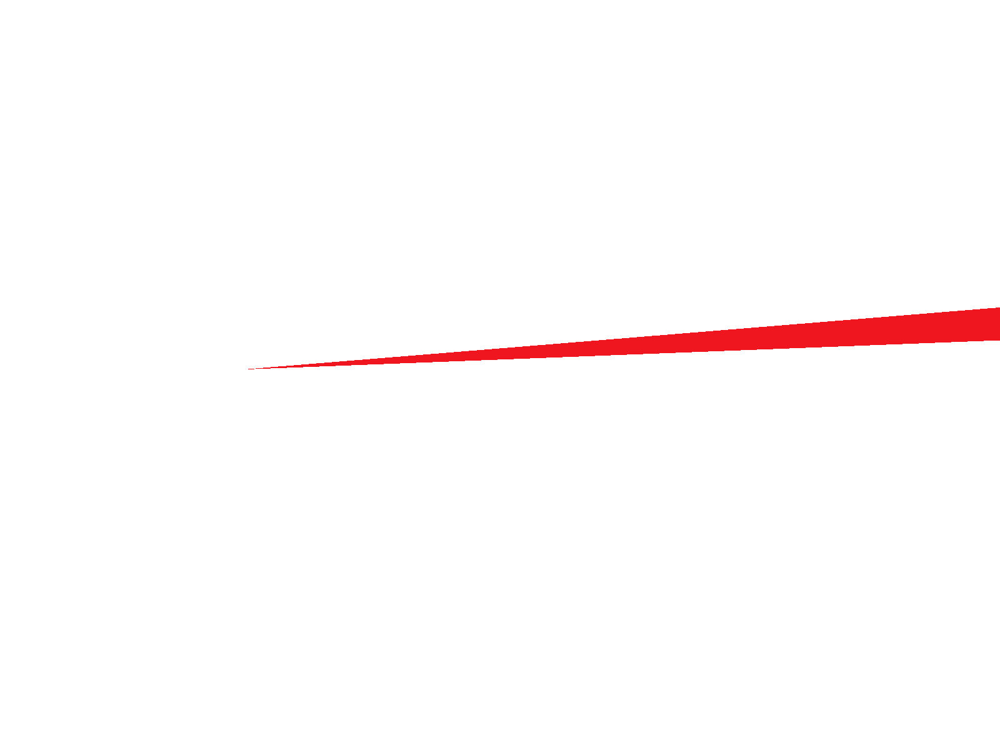
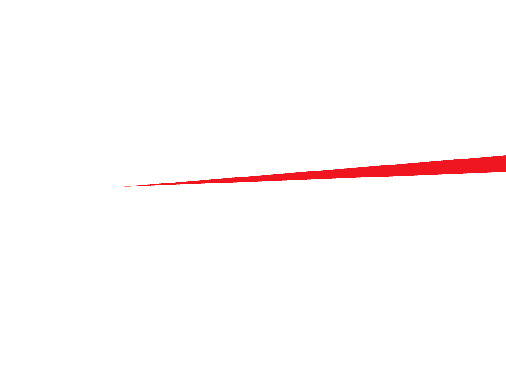
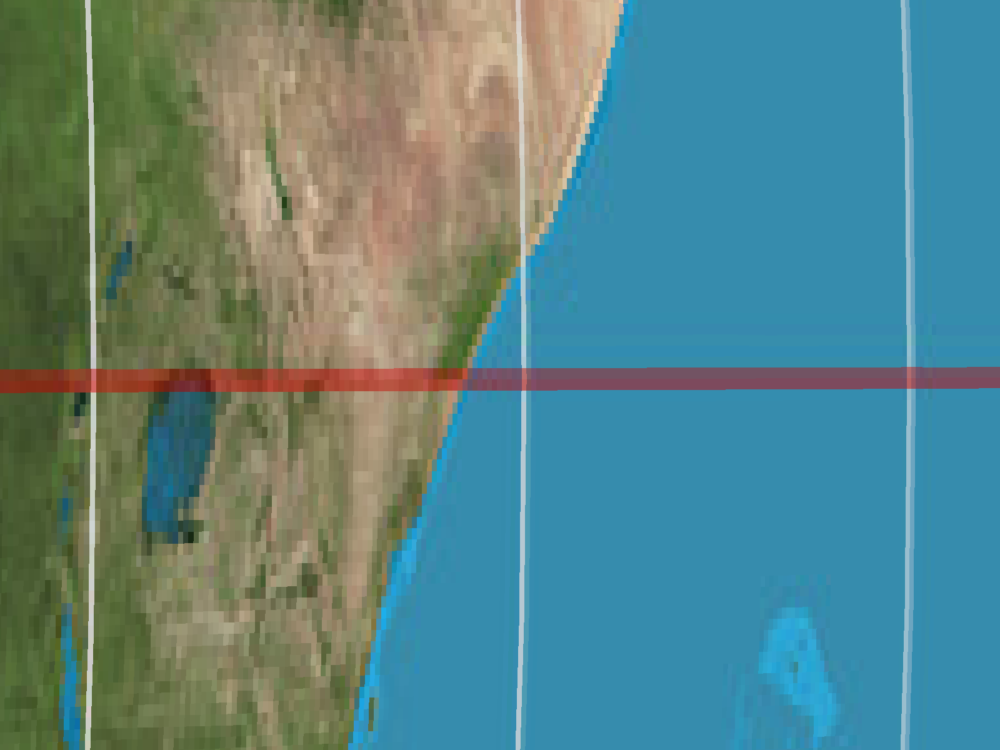
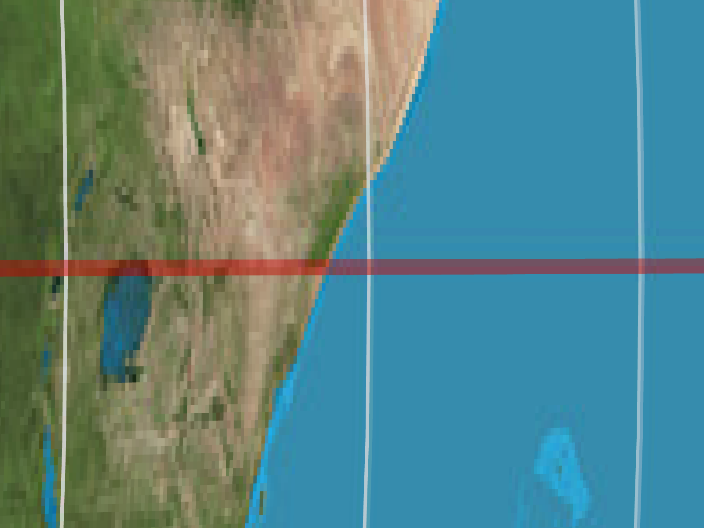
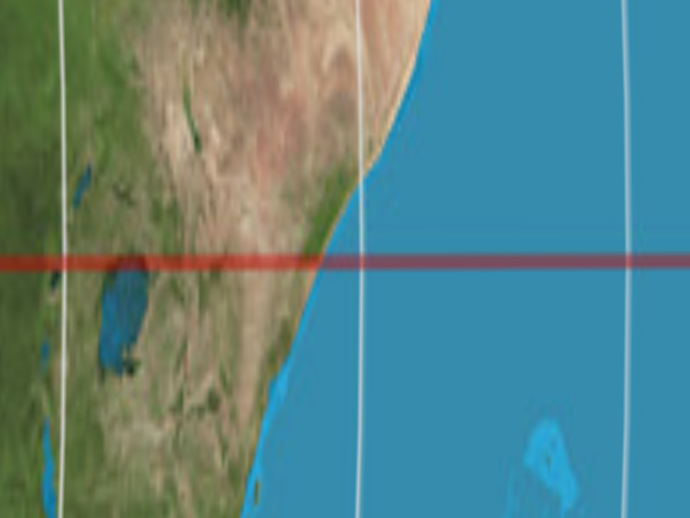
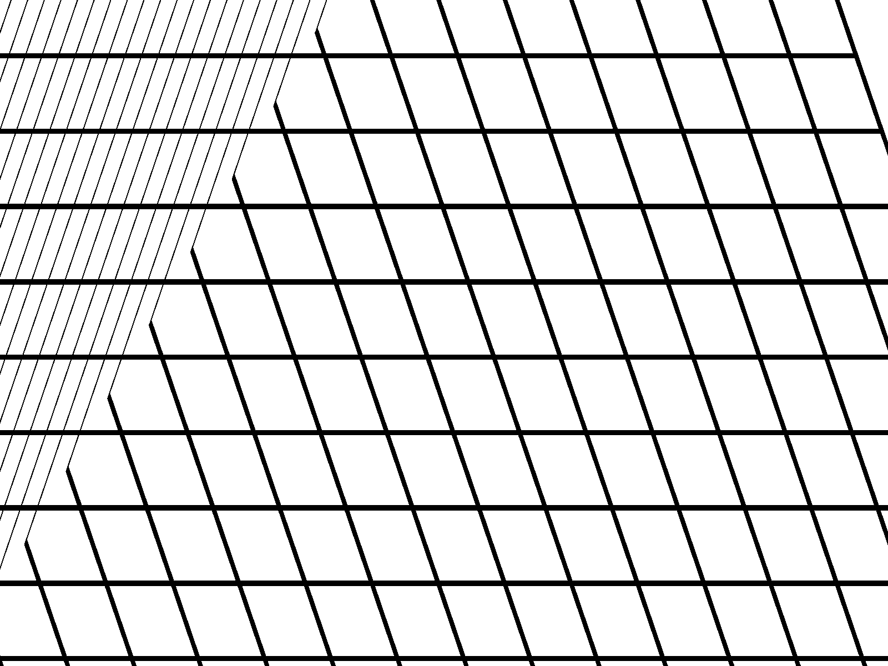
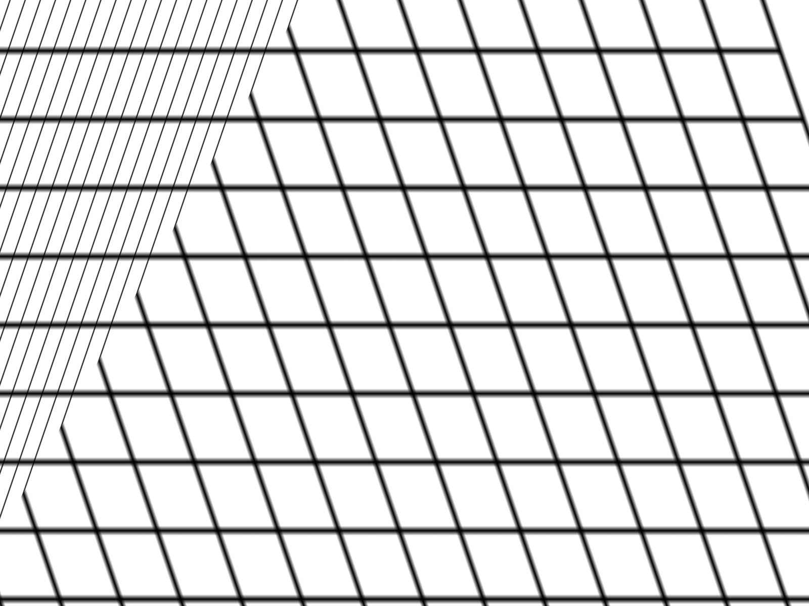

CS184/284A Spring 2025 Homework 1 Write-Up
Names:
Link to webpage: cal-cs184-student.github.io/hw-webpages-d-wwwang/hw1/
Link to GitHub repository: github.com/cal-cs184-student/hw1-rasterizer-dwwwang
Overview
In this homework, I built a rasterizer from scratch capable of rendering SVG files with triangles, transforms, texture mapping, and antialiasing. Starting from basic triangle rasterization using point-in-triangle tests, I progressively added supersampling for antialiasing, homogeneous coordinate transforms, barycentric color interpolation, and finally texture mapping with both pixel sampling and mipmap level sampling.The most interesting thing I learned was how all three antialiasing techniques (supersampling, bilinear pixel sampling, and mipmap level sampling) are solving the same underlying problem (high-frequency content being undersampled) but from different angles. Supersampling brute-forces it by taking more samples per pixel, bilinear sampling smooths within a single texture level, and mipmapping prefilters the texture so that minified regions never encounter aliasing in the first place. Seeing how they compose together into trilinear filtering, and understanding the speed and memory tradeoffs of each, has helped me gain a much more concrete understanding of how rendering and rasterizing processes handle texture quality.
Task 1: Drawing Single-Color Triangles
Rasterization is the sampling of a 2D indicator function.I created
inside(float x0, float y0, float x1, float y1, float x2, float y2, float sx, float sy),
which takes in the coordinates of a triangle as well as a sample point (sx, sy). This function takes
these points and performs the line equation tests as described in Lecture 2. To account for winding order of the
vertices, each AND expression in the OR expression of the return statement checks for either
\(>= 0\) (CCW) or \(<= 0\) (CW).
Then, I sampled each point within the bounding box of the triangle, ensuring the algorithm is no less efficient than checking only within the bounding box. The bounding box was determined by finding the bottommost, uppermost, leftmost, and rightmost 1D point of the triangle. From there, the sampled point was determined by adding (0.5, 0.5) to each point within the bounding box. For each sampled point,
fill_pixel(sx, sy, color)
is called if the indicator function inside(x0, y0, x1, y1, x2, y2, sx, sy) returns true.
The image below shows
svg/basic/test4.svg centered on the red triangle in the middle.
Task 2: Antialiasing by Supersampling
Supersampling is useful in that it reduces aliasing on triangle edges (antialiasing) by testing multiple sample points per pixel instead of just one. Instead of using a binary inside/outside indicator function at each pixel center, I tested ann x n grid of subsamples across each pixel and averaged the ones inside it.
As a result, pixels that are partially inside a triangle will have a color proportional to its coverage. This
produces smoother edges compared to the jaggies seen at sample rate 1.
The main data structure is
sample_buffer, which I resized to
width x height x sample_rate elements and treated as a virtual high-resolution image of size
(width x n) x (height x n) with n = sqrt(sample_rate). Each output pixel
(x, y) corresponds to an n x n block, indexed as
(y*n + j) * width*n + (x*n + i) with i and j as offsets for each 2D axis.
In
rasterize_triangle, the inner loop tests each subsample at position
(x + (i+0.5)/n, y + (j+0.5)/n) and writes hits directly into the sample buffer. In
resolve_to_framebuffer, all n x n subsamples for each pixel are averaged into a single
color that is then written to the screen. Points and lines are handled by filling all subsamples of a pixel with
the same color in fill_pixel, such that they are not affected by the sample rate.
The images below shows
svg/basic/test4.svg at sample rates 1, 4, and 16. At rate 1, the corner has jaggies due to
aliasing. Furthermore, the corner itself is slightly disconnected due to the pixel centers falling outside of the
thin triangle tip. At rates 4 and 16, subsamples near the corner partially cover pixels that were entirely missed
at rate 1, resulting in a gradual fade rather than the hard cutoff that was observed prior.
|

|

|
|
|
Task 3: Transforms
I applied arotate transformation to both arm segments of the right arm, placing it between the
translate and scale transformation. This order ensures the right arm is scaled first,
then rotated, and finally translated, which avoids the translation from being distorted. The rotation was in
negative degrees to rotate it CCW or upwards.
I applied another
rotate transformation to the outermost arm segment of the left arm, placing it
between the translate and scale transformation. Similarly, the same order was used, and
the rotation in negative degrees rotates it downwards since the left arm points in the opposite direction from the
ight arm.
Finally, I adjusted the
translate transformation of the outermost arm segment of the left arm to offset it better relative to the innermost arm segment post rotation.
The image below shows
my-robot.svg.
Task 4: Barycentric coordinates
Barycentric coordinates represent any point inside a triangle as a weighted linear combination of its three vertices in the form of the following: \[(x, y) = \alpha A + \beta B + \gamma C \quad \text{where} \quad \alpha + \beta + \gamma = 1, \quad \alpha,\beta,\gamma \geq 0\] Each weight \(\alpha\), \(\beta\), \(\gamma\) represents the distance of the point to each vertex. For instance, at vertex \(A\), \(\alpha=1\) and the other weights are 0. On the other hand, at the centroid of the triangle, all weights are equal to \(\frac{1}{3}\). Therefore, the color at any interior point is equal to the following weighted linear combination: \[\alpha C_A + \beta C_B + \gamma C_C\] The image below showsbarycentric.svg, a triangle with a blue top vertex (\(\alpha=1\)), red left
vertex (\(\beta=1\)), and green right vertex (\(\gamma=1\)). Furthermore, all of its interior points form a
gradient of colors based on the distance to each vertex.
The image below shows
test7.svg
Task 5: "Pixel sampling" for texture mapping
Pixel sampling is the process of determining the color of a pixel based on a continuous texture coordinate (UV). This is used in the rasterization of textured triangles, where UV coordinates are computed at each sample point through barycentric interpolation.This is done in
rasterize_textered_triangle, where for each sample point inside the triangle, the
barycentric weights \(\alpha\), \(\beta\), \(\gamma\) are calculated and then used in the interpolation of the
UV coordinates from the three vertex UVs. Depending on psm, I performed either nearest or bilinear
pixel sampling (sample_nearest and sample_bilinear respectively).
The nearest pixel sampling method scales the UV coordinate to texel space and finds the nearest integer texel through a
floor function. This method is overall faster, however it tends to produce more pixelated
results when the texture is magnified due to clusters of pixels mapping to the same texel.
The bilinear pixel sampling method takes the 4 nearest texels and lerps between them horizontally and vertically through the fractional part of the texel coordinate. This method is overall slower compared to the nearest pixel sampling method, but it tends to produce smoother results by blending neighboring texels.
The images below shows
svg/texmap/test1.svg using nearest and bilinear pixel sampling at rates 1 and 16.
The images produced using nearest pixel sampling are noticeably more pixelated when magnified (or when one texel
covers many pixels). This is due to nearest pixel sampling creating hard boundaries whereas bilinear pixel sampling
smooths these boundaries. At higher supersampling rates, the difference between the two methods is smaller since
supersampling performs the averaging of multiple samples per pixel itself, providing a better approximation regardless
of the pixel sampling method. When the image is more minified (or when there are many texels per pixel), both pixel
sampling methods produce similar results, as sampling occurs across a texel dense region.
|

|

|

|

|
Task 6: "Level Sampling" with mipmaps for texture mapping
Level sampling is the process of selecting the appropriate mipmap level to sample from based on how quickly UV coordinates change across the screen. When a texture is minified (many texels map to one pixel), sampling from the full-resolution texture introduces aliasing. Instead, a prefiltered lower-resolution version of the texture (a mipmap level) is used, where the level is determined by the rate of change of the UV coordinates across adjacent pixels.This is done in
rasterize_textured_triangle, where for each sample
point the UV differentials du/dx, dv/dx,
du/dy, dv/dy are precomputed once outside the loop
from the barycentric increments and stored in sp.p_dx_uv and
sp.p_dy_uv of the SampleParams struct. These represent
the UV coordinates at one pixel to the right and one pixel below the current
sample. In get_level, these difference vectors are scaled by the
texture dimensions to get the texel-space footprint, and the mipmap level is
computed as \(\log_2\) of the larger of the two gradient magnitudes, clamped to
the valid mipmap range.
Depending on
lsm, I implemented three level sampling methods in
Texture::sample. When lsm == L_ZERO, the zeroth
mipmap level (full resolution) is always used. When lsm == L_NEAREST,
the continuous level from get_level is rounded to the nearest integer
and that single mipmap level is sampled. When lsm == L_LINEAR, the
level is kept as a continuous value and two adjacent mipmap levels are sampled and
linearly blended by the fractional part of the level, which combined with bilinear
pixel sampling produces trilinear filtering.
The three sampling techniques offer different tradeoffs between speed, memory, and antialiasing power. Increasing the number of samples per pixel (supersampling) produces the strongest antialiasing but scales both in computation and memory as \(O(\text{sample rate})\), since the sample buffer grows proportionally. Pixel sampling adds minimal memory overhead but bilinear requires 4 texture lookups per sample instead of 1, with a moderate improvement in smoothness. Level sampling requires storing the full mipmap pyramid, which uses approximately \(\frac{1}{3}\) extra memory beyond the base texture, but is computationally cheap and effectively reduces aliasing in minified regions.
L_NEAREST is faster than
L_LINEAR, while L_LINEAR (especially combined with
P_LINEAR) provides the smoothest results at the cost of two texture
lookups per sample across two mipmap levels.
The images below shows
svg/texmap/my_texture.svg using the combinations of L_ZERO
and P_NEAREST, L_ZERO and P_LINEAR,
L_NEAREST and P_NEAREST, and L_NEAREST and
P_LINEAR. The L_NEAREST images appear smoother in
minified regions as lower mipmap levels are used, reducing high-frequency aliasing.
P_LINEAR further blends texels within a level, contributing additional
smoothness particularly in magnified regions.
|

|

|

|

|